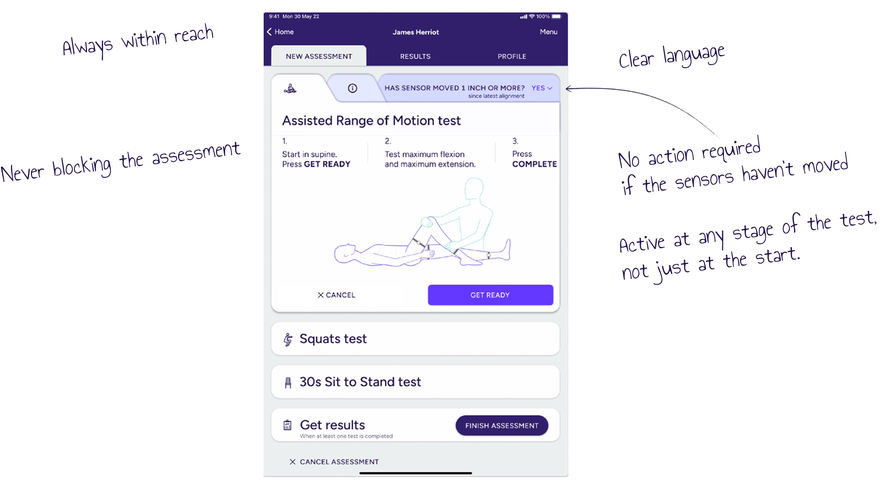
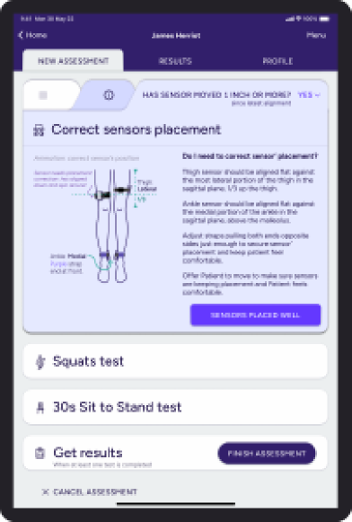
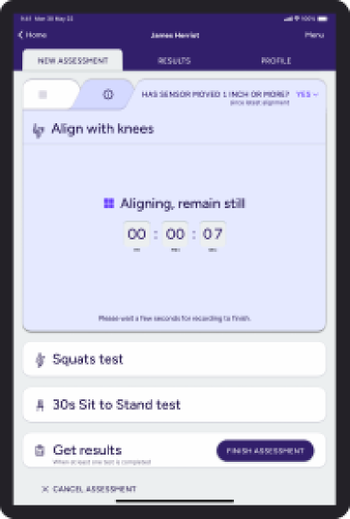
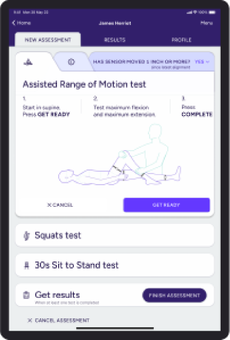
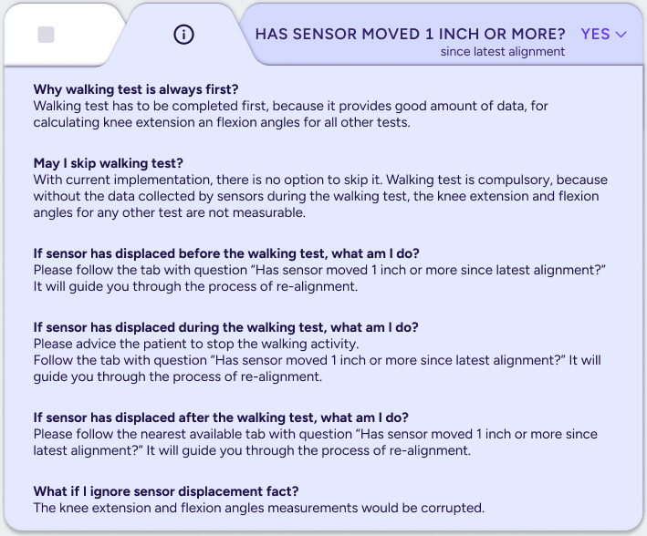

The solution
A re-alignment reminder that follows the user.

A persistent tab attached to every test tile that requires sensors. It travels with the assessment, asks a single clear question, and demands no action unless the sensors actually moved.
- Sticks to every test tile that depends on sensors — always within reach, never blocking the assessment.
- Active at any stage of the test, not just at the start.
- Clear language so the user immediately understands when a re-alignment is needed.
- No action required if the sensors haven't moved — the tab stays quiet by default.
Tab over button. A/B testing showed clinicians preferred the tab pattern over a button. Tabs suggest persistence and exploration — they let users investigate information without losing the context of the assessment they're running. The decision came from users, not from us.
User flow
Re-alignment, in four moments.

01 · Active assessment
The sensor slips.
During an assessment, the physiotherapist notices a sensor has shifted from its place.

02 · Reminder in action
The tab asks the question.
"Has the sensor moved 1 inch or more?" — short, specific, impossible to misread. The physiotherapist taps the tab.

03 · Re-alignment flow
It runs inline.
The re-alignment journey is incorporated into the test tile itself — no jumping to a separate screen and no lost context.

04 · Back to assessment
The user is returned automatically.
Once the re-alignment is done, the app auto-returns to the test tab the clinician was working in.
Supporting detail
The "why" and "when" sit one tap away.
Information about why alignment matters and when it's required is parked on an additional info tab — available when the user wants it, never blocking the assessment.

The results
The numbers moved, and the complaints stopped.
The persistent, integrated re-alignment reminder addressed the issue on three fronts: it prompted users clearly without interrupting them, it dropped the cost of acting on the prompt to almost nothing, and it made data accuracy a natural side-effect of the workflow rather than a discipline the user had to enforce.
93%
drop in users complaining the product was
untruthful
100%
of users now do the re-alignment when
prompted
100%
of users now notice when the sensor has moved
From 0% running the flow to 100% running it — and the trust signal in customer feedback moved with it. The hardware hadn't changed; the workflow had.
Lessons
What this taught us about designing for clinical tools.
-
Prioritise data integrity.
In any system that relies on data for decisions, the interface has to actively prevent or mitigate sources of error — not just expose them and hope.
-
Integrate with the existing workflow.
New features should feel like a natural extension of the user's normal flow. If your fix demands a context switch, it won't survive contact with a busy clinic.
-
Proactive, clear communication beats
vigilance.
Don't ask the user to spot problems. The system should surface them — and route the user toward the fix in the same gesture.
-
Value user feedback and iteration.
The tab-over-button decision came from users. The best calls in this project all came from listening to what the people in clinic were already telling us.